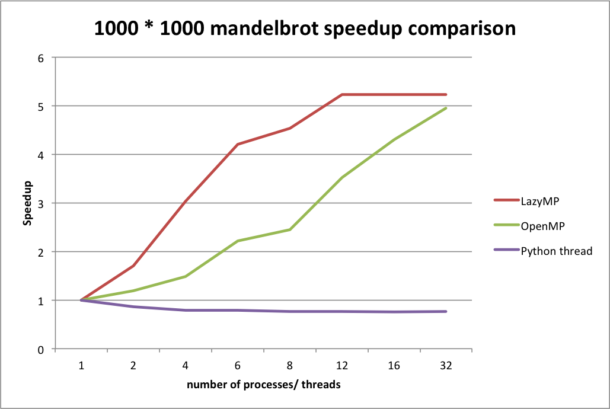

We have developed a python-to-python translator which support "#pragma omp parallel for" annotation. According our two benchmarks "BusyLoop" and "Mandelbrot", LazyMP can provide near N/2x ~ Nx speedup on N cores machine.
LazyMP currently can support "#pragma omp parallel for" syntax. It translates a for-loop into ProcessPool().map() pattern, which first defines inner block as a core function and then uses ProcessPool().map() to fork multiple processes to execute the core function with differet elements in iterations to make it run in parallel.
User needs to write "#pragma omp parallel for" annotation nearby the for-loop to be paralled. Also, user needs to specify the shared variables (like the "data" in the right example) with "#pragma shared", so the code can join the stored values to the shared variables correctly.
We implemented two benchmarks programs: BusyLoop and Mandelbrot. BusyLoop is just counting private variable i++ 5000 * 1000 times. Mandelbrot is invested by Pierre Fatou and Gaston Julia needing much CPU comutation
We implemented two other approaches for comparisons: Python threads version and C++ OpenMP version implementations.
We launched experiments in GHC machine 33, which has 6 cores (12-virtual cores due to Hyper-threading).
According the experiments, we found that LazyMP has near N/2~N speedup, which is much better than Python thread implementation and is competible with C OpenMP implementation.
Busyloop speedup experiment
Mandelbrot speedup experiment
We have finished first version of LazyMP and corresponding speedup experiment. In the first version, it can only support "#pragma omp parallel for" syntax, and the variables are not "truly" shared. The annotated shared variables are copied to each process, and then joined after the for-loop.
In the next step, we plan to implement shared variable and atomic syntax feature by using Namespace, Lock, dict, list in Python multiprocess package. This approach will launch a process to provide shared variables for each worker process. It may increase overhead due to communication, but it can support lock and atomic syntax.
Also, we will implement benchmark programs for shared variable version LazyMP to evaluate its speedup performance.
| Item | Time | People |
|---|---|---|
| Brain Storming | 4/2 | San-Chuan, Jiajun |
| Proposal | 4/2 | San-Chuan, Jiajun |
| Implementing Transator v.1 | 4/2 ~ 4/16 | San-Chuan |
| Implementing Benchmarks | 4/16 ~ 4/18 | San-Chuan |
| Speedup Experiments | 4/16 ~ 4/18 | San-Chuan |
| Check Point | 4/16 ~ 4/18 | San-Chuan |
| Implementing Transator v.2 - Shared Variables and Atomic Syntax | 4/27 ~ 4/29 | San-Chuan |
| Impementing Benchmarks for Shared Variables | 4/29 ~ 5/1 | San-Chuan |
| Speedup Experiments | 5/2 ~ 5/3 | San-Chuan |
| Debug and Tuning | 5/3 ~ 5/8 | San-Chuan |
| Prepare Presentation | 5/8 ~ 5/11 | San-Chuan, Jiajung |
| Final Write Up | 5/8 ~ 5/11 | San-Chuan, Jiajung |
We used pathos to fix the problem that some user functions cannot be used in official multiprocess.Processpool() correctly. In those cases, it will pop out PicklingError. Pathos can fix the problem; however, we are speculating pathos maybe one of bottleneck of LazyMP. We are trying to remove the package depedency.
We plan to implement shared variable feature for LazyMP. Because the feature will rely on a process to hold shared variables and process communication, we are speculating that it may hurt performance.